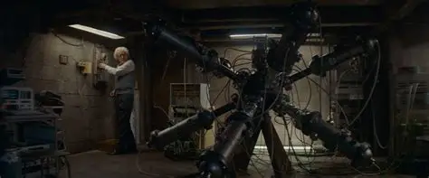

Origin World
Everything begins in a single origin world where a catastrophic accident at a nuclear power plant sets off a chain of events. This world contains the initial source of all temporal manipulation and the creation of the time machine. The experiments conducted here breach the barriers between time itself, forever altering the fabric of reality.